序列化：就是将对象转化为字节序列的过程，主要用于跨平台跨机器的信息传递 目前反序列化漏洞都不是原生方法
简单的序列化和反序列化实现代码演示
举个例子： person.java
package src; // 修改成自己的 Package 路径
import java.io.Serializable;
public class Person implements Serializable {
private String name;
private int age;
public Person(){
}
// 构造函数
public Person(String name, int age){
this.name = name;
this.age = age;
}
@Override
public String toString(){
return "Person{" +
"name='" + name + '\'' +
", age=" + age +
'}';
}
}SerializatinTest.java
package src;
import java.io.FileOutputStream;
import java.io.IOException;
import java.io.ObjectOutput;
import java.io.ObjectOutputStream;
public class SerializationTest {
public static void serialize(Object obj) throws IOException{
ObjectOutputStream oos = new ObjectOutputStream(new FileOutputStream("ser.bin"));//将文件流输出到JVM的ser.bin里
oos.writeObject(obj);
}
public static void main(String[] args) throws Exception{
Person person = new Person("aa",22);
System.out.println(person);
serialize(person);
}
}Unserialization.java
package src;
import java.io.FileInputStream;
import java.io.IOException;
import java.io.ObjectInputStream;
public class UnserializeTest {
public static Object unserialize(String Filename) throws IOException, ClassNotFoundException{
ObjectInputStream ois = new ObjectInputStream(new FileInputStream(Filename));
Object obj = ois.readObject();
return obj;
}
public static void main(String[] args) throws Exception{
Person person = (Person)unserialize("ser.bin");//从ser.bin读取内容
System.out.println(person);
}
}运行
SerializationTest.java:
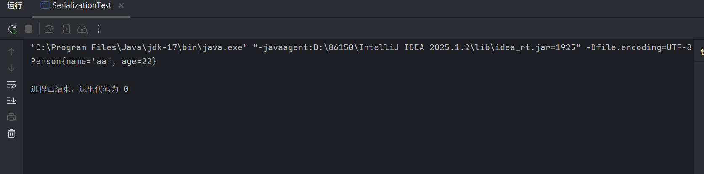
UnserializationTest.java序列化与反序列化的根本目的是数据的传输。
- SerializationTest.java
这里我们将代码进行了封装，将序列化功能封装进了 serialize 这个方法里面，在序列化当中，我们通过这个
FileOutputStream输出流对象，将序列化的对象输出到ser.bin当中。再调用 oos 的writeObject方法，将对象进行序列化操作。
ObjectOutputStream oos = new ObjectOutputStream(new FileOutputStream("ser.bin"));
oos.writeObject(obj);- UnserializeTest.java 进行反序列化
ObjectInputStream ois = new ObjectInputStream(new FileInputStream(Filename));
Object obj = ois.readObject();Serializable 接口
- 序列化类的属性没有实现 Serializable 那么在序列化就会报错 只有实现 了Serializable 或者 Externalizable 接口的类的对象才能被序列化为字节序列。（不是则会抛出异常） Serializable 接口是 Java 提供的序列化接口，它是一个空接口，所以其实我们不需要实现什么。
public interface Serializable {
}Serializable 用来标识当前类可以被 ObjectOutputStream 序列化，以及被 ObjectInputStream 反序列化。如果我们此处将 Serializable 接口删除掉的话，会导致如下结果。
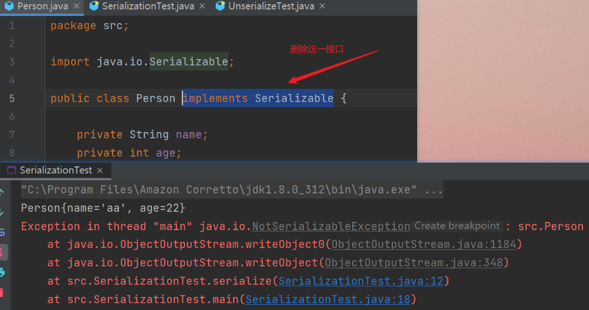
2. 在反序列化过程中，它的父类如果没有实现序列化接口，那么将需要提供无参构造函数来重新创建对象。 3. 一个实现 Serializable 接口的子类也是可以被序列化的。 4. 静态成员变量是不能被序列化 序列化是针对对象属性的，而静态成员变量是属于类的。 5. transient 标识的对象成员变量不参与序列化为什么会产生序列化的安全问题
引子
- 序列化与反序列化当中有两个 “特别特别特别特别特别” 重要的方法 ————
writeObject和readObject。
这两个方法可以经过开发者重写，一般序列化的重写都是由于下面这种场景诞生的。
举个例子，MyList 这个类定义了一个 arr 数组属性，初始化的数组长度为 100。在实际序列化时如果让 arr 属性参与序列化的话，那么长度为 100 的数组都会被序列化下来，但是我在数组中可能只存放 30 个数组而已，这明显是不可理的，所以这里就要自定义序列化过程啦，具体的做法是重写以下两个 private 方法：
private void writeObject(java.io.ObjectOutputStream s)throws java.io.IOException
private void readObject(java.io.ObjectInputStream s)throws java.io.IOException, ClassNotFoundException只要服务端反序列化数据，客户端传递类的 readObject 中代码会自动执行，基于攻击者在服务器上运行代码的能力。
所以从根本上来说，Java 反序列化的漏洞的与
readObject有关。
可能存在安全漏洞的形式
入口类的 readObject 直接调用危险方法
- 这种情况呢，在实际开发场景中并不是特别常见，我们还是跟着代码来走一遍，写一段弹计算器的代码，文件 ———— “Person.Java“
package com.johnsmith;
import java.io.IOException;
import java.io.ObjectInputStream;
import java.io.Serializable;
public class Person implements Serializable {
private String name;
private int age;
public Person() {
}
// 构造函数
public Person(String name, int age) {
this.name = name;
this.age = age;
}
@Override
public String toString() {
return "Person{" +
"name='" + name + '\'' +
", age=" + age +
'}';
}
private void readObject(ObjectInputStream ois) throws IOException, ClassNotFoundException {
ois.defaultReadObject();
Runtime.getRuntime().exec("calc");
}
}先运行序列化程序 ———— “SerializationTest.java“，再运行反序列化程序 ———— “UnserializeTest.java“
这时候就会弹出计算器，也就是 calc.exe。
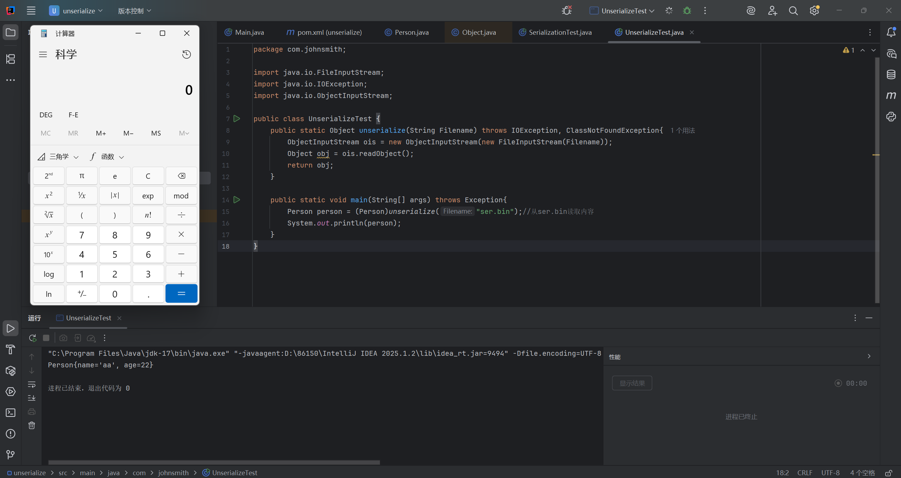
入口参数中包含可控类，该类有危险方法，readObject 时调用
入口类参数中包含可控类，该类又调用其他有危险方法的类，readObject 时调用
构造函数/静态代码块等类加载时隐式执行
产生漏洞的攻击路线
首先的攻击前提：继承 Serializable
入口类：source （重写 readObject 调用常见的函数；参数类型宽泛，比如可以传入一个类作为参数；最好 jdk 自带）
找到入口类之后要找调用链 gadget chain 相同名称、相同类型
执行类 sink （RCE SSRF 写文件等等）比如 exec 这种函数
这里看不懂先不要紧，后续看到 URLDNS 利用链的复现就会悟了哈哈，我当时这里也看不懂，后面悟了。
以hashmap为例说明如何找到入门类
打开HashMap.java，在140行可以看到HashMap继承了Serialize这个接口，说明有反序列化最基础的攻击条件
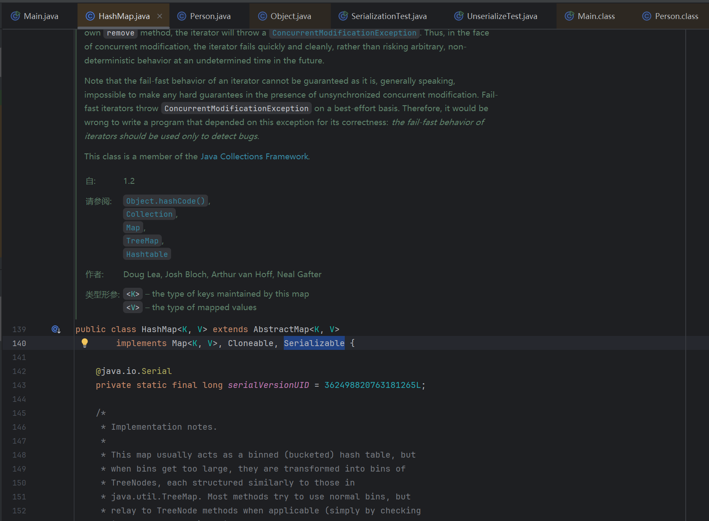
Alt+7打开IDEA的Structure工具，可以快速地了解一个类。根据前文的说明需要先找到重写的readObject，我们看到第 1550 行与 1552 行中，Key 与 Value 的值执行了readObject 的操作，再将 Key 和 Value 两个变量扔进 hash 这个方法里
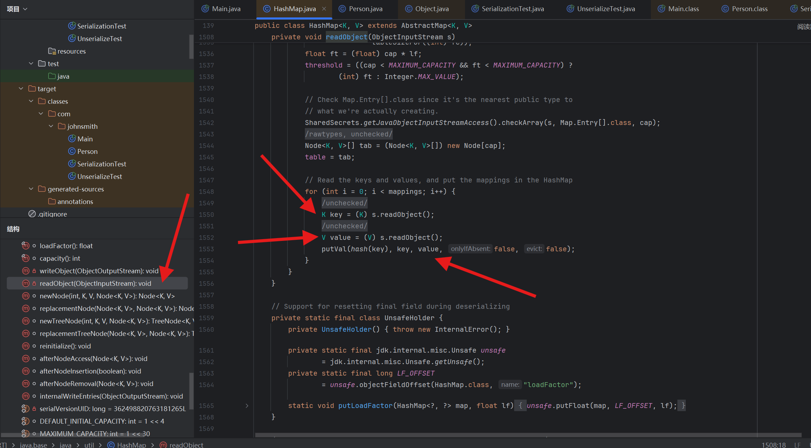
再跟进(ctrl+鼠标左键即可) hash 当中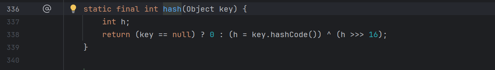
若传入的参数 key 不为空，则h = key.hashCode()，于是乎，继续跟进 hashCode 当中。
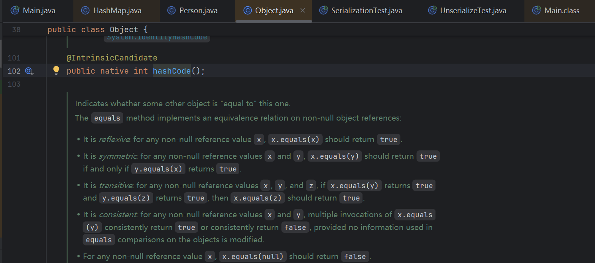
hashCode在Object.java中，满足我们 调用常见的函数 这一条件。实战：URLDNS
出发点：URLDNS 在 Java 复杂的反序列化漏洞当中足够简单；URLDNS 就是 ysoserial 中⼀个利⽤链的名字，但准确来说，这个其实不能称作“利⽤链”。
因为其参数不是⼀个可以“利⽤”的命令，⽽仅为⼀个URL，其能触发的结果也不是命令执⾏，⽽是⼀次 DNS 请求。
虽然这个“利⽤链”实际上是不能“利⽤”的，但因为其如下的优点，⾮常适合我们在检测反序列化漏洞时使⽤。
- 使⽤ Java 内置的类构造，对第三⽅库没有依赖。
- 在⽬标没有回显的时候，能够通过 DNS 请求得知是否存在反序列化漏洞 URL 类，调用
openConnection方法，到此处的时候，其实openConnection不是常见函数，就已经难以利用了。 我们先去到ysoserial的项目当中，去看看它是如何构造 URLDNS 链的。
Gadget Chain:
HashMap.readObject()
HashMap.putVal()
HashMap.hash()
URL.hashCode()
URL 是由 HashMap 的 put 方法产生的，所以我们先跟进 put 方法当中。put 方法之后又是调用了 hash 方法；hash 方法则是调用了 hashcode 这一函数。
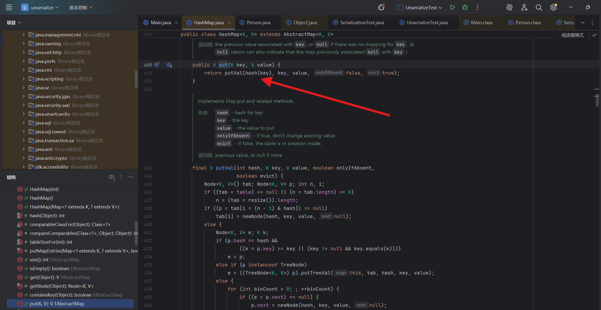
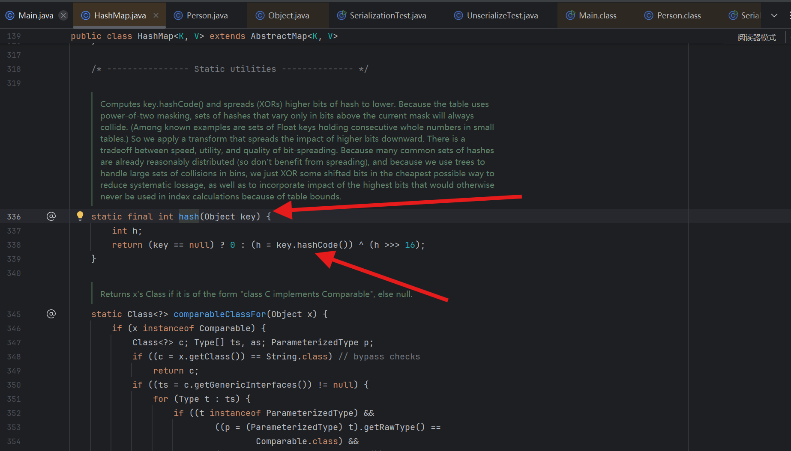
key是hashcode()函数的变量名，也是hash()传进的参数，根据前面写的：hashmap.put(new URL("DNS生成的 URL，用dnslog就可以"),1); // 传进去两个参数，key = 前面那串网址，value = 1所以这里，我们跟进 URL，去看看 URL 跟进一堆之后的 hashCode 方法是如何实现的。
跟进 URL，我们肯定是要去寻找 URL 调用的函数的函数（的函数，应该还有好几个的函数，就不写出来了，不然大家就晕了）的 hashCode 方法。
在左边 Structure 直接寻找 hashCode 方法，URL 中的 hashCode 被 handler 这一对象所调用，handler 又是 URLStreamHandler 的抽象类。我们再去找 URLStreamHandler 的 hashCode 方法。
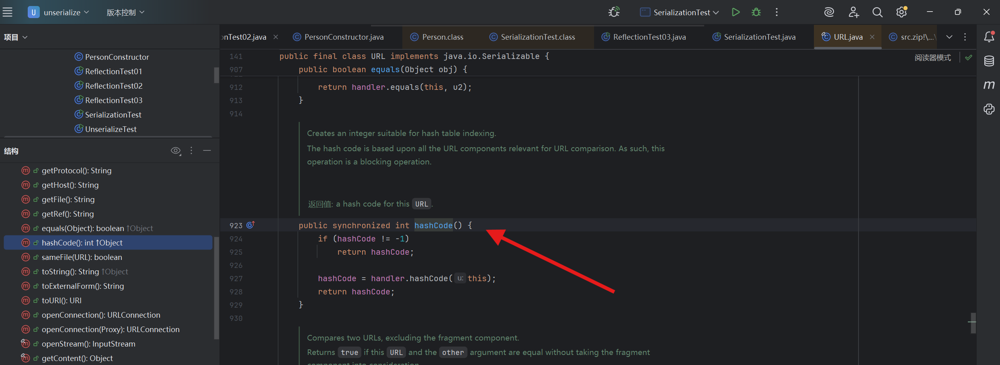
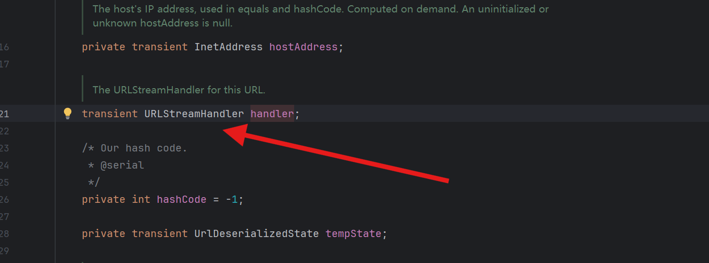
终于找到了，这个用于 URLDNS 的方法 ————getHostAddress
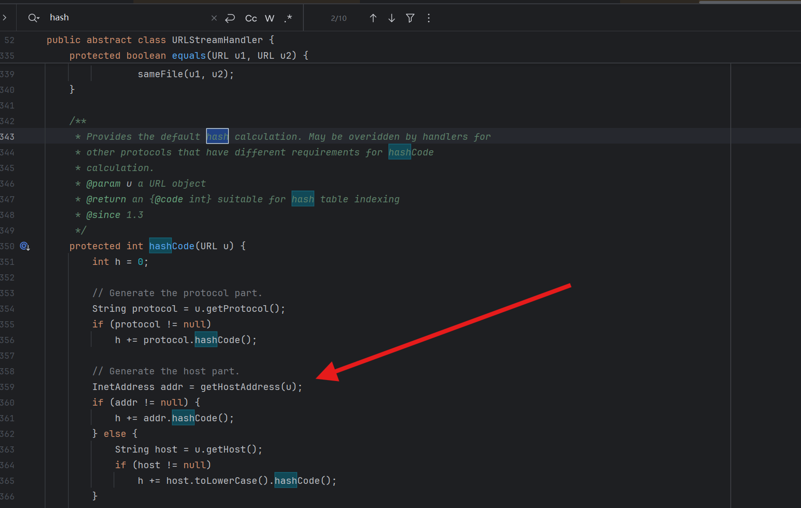
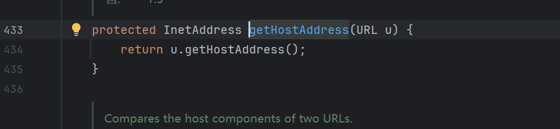
这⾥InetAddress.getByName(host) 的作⽤是根据主机名，获取其 IP 地址，在⽹络上其实就是⼀次 DNS 查询。到这⾥就不必要再跟了。
所以，⾄此，整个 URLDNS 的Gadget其实清晰⼜简单：
-
HashMap→readObject()
-
HashMap→hash()
-
URL→hashCode()
-
URLStreamHandler→hashCode()
-
URLStreamHandler→getHostAddress()
-
InetAddress→getByName()